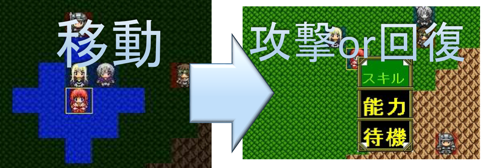

ABOUT
-
Description1

-
Description2
-
Description3

-
Description4

-
Description5

STORY
かつて世界には常人離れした能力「異能」が存在していた。
「異能」の力を持つ者は「異能者」と呼ばれた。
異能者には、千本の槍も凌ぐ強靭な肉体を持つ者、異世界の生物を召喚できる者、触れた物体を自由自在に操作できる者など様々な者達がいた。
その異能者の中でもずば抜けて強力な異能を持つ者達が8人いて、彼らは「八皇」と呼ばれていた。
世界は8つの地区に分割され、各地区が八皇によって統治されていた。
しかし、異能の力を持たない者は「無能者」と呼ばれ、どの地区でも例外なく迫害され、八皇を頂点とする支配・圧政が続いていた。
そして、そんな支配と圧政の世界に異を唱えた者達が現れた。
彼らは自由な世界を作るという一つの目的のために無能者・異能者関係なく集い、人は彼らを「天空の暁」と呼んだ。
「天空の暁」は無能者を迫害する異能者、八皇、そして異能の力の根源と戦った。
その結果、「天空の暁」は世界から異能の力を消し去り、世界を統べる統一国家「アカツキ」を作り上げた。
「アカツキ」は圧政のない世界を作り上げ、世界は本来あるべき姿を取り戻した。
「アカツキ」の政は、「天空の暁」の末裔達によって行われ、長い間秩序が保たれていた。
しかし300年の時が経ち、世界の秩序は崩壊した。
変化のない世界に苛立ちを覚えていた者達や権力を欲する者達が一斉に「アカツキ」に対して蜂起したのだった。
長い間平和な時代が続き実戦経験がほぼ皆無だった「アカツキ」の軍隊は、あっけなく殲滅させられた。
「アカツキ」は滅び、力のある者達は世界の各地を自分の領土とし、世界は戦乱の世という最悪の時代を迎えてしまった。
国を失った「アカツキ」の王族の生き残りは、「アカツキ」復興のための旅に出たのだった。
あなたは亡国「アカツキ」の王子だ。
軍事力の低下を「アカツキ」が滅んだ原因の1つとして考えたあなたは、戦闘の精鋭部隊を設立した。
その精鋭部隊は戦闘の素質が高い者で構成され、かつての英雄軍の名を借りて「天空の暁」と名付けられた。
これからあなたは「天空の暁」を指揮して、戦乱の世を戦い抜くことになる。
あなたはこの戦乱の世を変えることができるだろうか？それとも．．．
SPECIFICATIONS
タイトル
崩壊世界
ジャンル
王道系シミュレーションRPG
CPU
Core2 Duo 以上
メモリ
256MB以上 (512MB以上推奨)
HDD容量
100MB以上の空き容量
ディスプレイ
1024 x 768 フルカラー
対応OS
Windows XP/Vista/7(32bit,64bit)
(※macは不明)
Platform
JRE1.6以上
DOWNLOAD
ゲーム本編
崩壊世界(windows版)
崩壊世界(mac版)
※windows版とmac版でのセーブデータの使い回しはできません。ごめんなさいm(__)m
新マップ追加パッチ